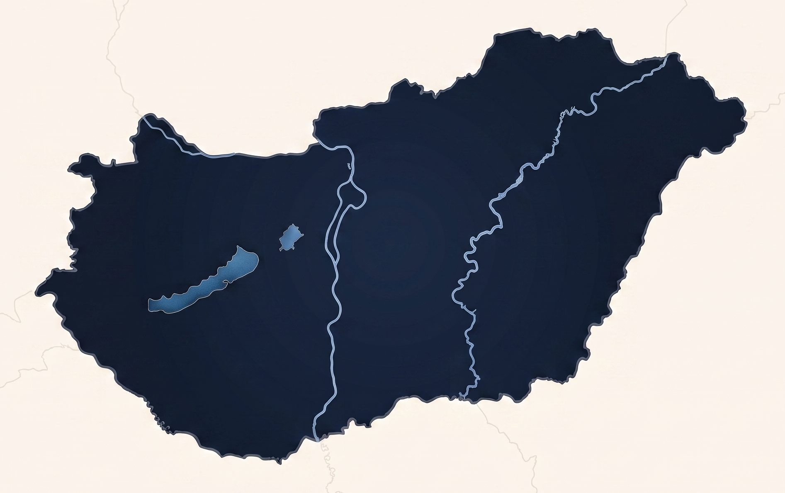

01
Budaörs
2010 óta működő központi bázis az M1-es autópálya közelében
A budaörsi a központi, irányító bázis: itt kapott helyet a vezetőség és a mentéskoordináció is.
10–11orvos10–11mentőtiszt5–6pilóta4–5műszaki munkatárs~800éves bevetés
Országos hálózat
Hét légimentő bázis biztosít gyors, magas színvonalú sürgősségi ellátást Magyarország egész területén.

Vidd az egeret egy bázis fölé, vagy koppints rá a részletekért
2010 óta működő központi bázis az M1-es autópálya közelében
A budaörsi a központi, irányító bázis: itt kapott helyet a vezetőség és a mentéskoordináció is.
A Balaton északi partjának légimentő bázisa
Elsősorban Veszprém, Somogy, Fejér, Győr-Moson-Sopron, Tolna és Zala vármegyét látja el. Munkatársai rendszeres képzéseken tartják fenn a helyszíni ellátás legmagasabb szakmai színvonalát.
Somogy vármegye, a Balatontól délre
Bázis leírása hamarosan frissül.
2022 decembere óta a szekszárdi ipari parkban
A korábban a Pécs-Pogány repülőtéren működő bázis áthelyezése mintegy 1 350 km²-rel növelte a 15 percen belül elérhető területet. Repülésre alkalmatlan időjárásban földi mentőorvosi kocsival segítik az ellátást.
Az 5. bázis, 2008 decembere óta — hívójele: Medikopter 5
A Szentestől délre, a tévétorony közelében működő egység a Dél-Alföld nagy részének légimentését biztosítja.
22 éve a miskolci városi sportrepülőtéren
Elsősorban Borsod-Abaúj-Zemplén vármegyét fedi le, de Heves, Nógrád, Szabolcs-Szatmár-Bereg, Hajdú-Bihar, esetenként Jász-Nagykun-Szolnok területére is eljut. Következő mérföldkőként egy új, önálló bázis építése várhatóan tavasszal kezdődik.
Története 1993-ig nyúlik vissza; kezdeményezője Dr. Szép Imre volt
A működés 1999-től stabilizálódott, azóta az egészségügyi személyzet folyamatosan a pilóta és a műszaki személyzet mellett teljesít szolgálatot a repülőtéren. Korábban csak riasztás után, mentőautóval érkeztek a reptérre. A bázis 2019 óta EC-135 P2+ helikopterrel működik.